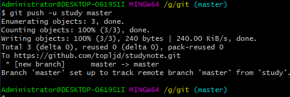
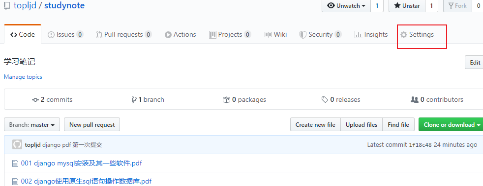
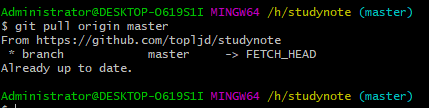
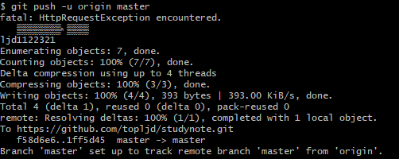
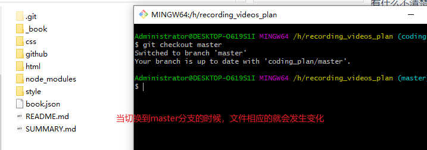

git的使用教程
安装地址：http://git-scm.com

1、安装完之后，右键
git bash here输入git --version
当看到版本号的时候，说明已经安装成功。
2、设置用户名和邮箱，尽量和github账号一致
git config --global user.name topljd(您的用户名)
git config --global user.email 820230548@qq.com(您的邮箱)

3、创建工作区，在文件夹内右键 git bash
创建工作区的时候，要在想要创建的文件夹内！
如果我要在G:\git下创建工作区，.git是隐藏的文件夹，里面的文件不用管就可以了！

git的使用，举例
1、创建readme.txt文件，并增加到缓存区
git add readme.txt //将readme.txt这个文件增加到 暂存区 git add . //这个 点 表示当前目录下的所有文件2、commit提交到版本区
git commit -m "1、添加readme.txt文件" //后面引号内的内容为 注释

3、推送到远程的服务器
git remote add origin https://github.com/topljd/blog.git 远程连接仓库 git push -u origin master 推送到服务器
4、其他
git log //查看记录
git status //查看当前状态
二、在github上创建服务器
github地址，注册账号 地址：https://github.com
创建仓库
//create a new repository on the command line git init 创建git项目 git add readme.txt 将版本说明添加到 暂存库 git commit -m 'first commit' 提交到版本库，后面的为说明注释 git remote add origin https://github.com/topljd/blog.git 远程连接仓库 git push -u origin master 推送到服务器git loggit log --pretty=online 6a59ff31//查看版本git reset --hard 6a59ff31//回滚到某个版本
git使用常见的问题
1、提交不了的时候，显示 入校错误！
failed to push some refs to 'https://github.com/topljd/studynote.git'
hint: Updates were rejected because the remote contains work that you do
hint: not have locally. This is usually caused by another repository pushing
hint: to the same ref. You may want to first integrate the remote changes
hint: (e.g., 'git pull ...') before pushing again.
hint: See the 'Note about fast-forwards' in 'git push --help' for details.
答：因为此时版本中没有给readme.txt文件，解决办法
可以通过如下命令进行代码合并【注：pull=fetch+merge]
git pull --rebase origin master

此时将会把库里的文件下载到本地当前文件夹！
然后在进行提交
git push -m study master
2、如何删除github项目

点击setting
找到Danger Zone最下买你的delete this repository

确认是否真的要删除！
3、如何删除github库里面的某个文件
因为在github上不能直接删除某个文件，所以必须用git命令去删除，在上传的的项目文件里打开git，找到要删除的文件。202002101581332439512796.png

git pull --rebase origin master或者git pull origin master将github上的额文件重新拉下来，其中origin是别名，master是分支。
然后输入命令
dir查看目录下的而文件，如下图：
再输入命令
git rm -r --cache 202002101581332439512796.png删除磁盘上的该图片
再输入
git commit -m '删除了202002101581332439512796.png'提交添加说明如下图：最后输入
git push -u origin master更新github仓库，如下图：

文件已经被删除了！
4、当出现master warning: LF will be replaced by CRLF in www/css/style.css.>
git config --global core.autocrlf false一般的还是远程仓库中的文件与本地的文件不一样，需要先将远程仓库中的代码拉去到本地种！
5、创建分支
$ git checkout -b iss53 Switched to a new branch "iss53" 上面是下面的简写 $ git branch iss53 $ git checkout iss53
6、出现上传不了错误提示如下：
error: cannot pull with rebase: You have unstaged changes. error: please commit or stash them.
解决办法：
1.git pull –rebase 理解
这个命令做了以下内容： a.把你 commit 到本地仓库的内容，取出来放到暂存区(stash)（这时你的工作区是干净的） b.然后从远端拉取代码到本地，由于工作区是干净的，所以不会有冲突 c.从暂存区把你之前提交的内容取出来，跟拉下来的代码合并
所以 rebase 在拉代码前要确保你本地工作区是干净的，如果你本地修改的内容没完全 commit 或者 stash，就会 rebase 失败。
2.还是要听 git 提示的话，要理智，有什么不清楚的，就输入 git status 根据人家提示的来，该提交的提交，stash 的 stash。
3.删除文件后需要 git add -A, 光 git add. 不行，区别如下：
git add 的几种参数区别
git add -A 保存所有的修改
git add . 保存新的添加和修改，但是不包括删除
git add -u 保存修改和删除，但是不包括新建文件。
7、切换分支的时候里面本地文件夹中的文件也会发生变化


8、名字和分支的用法
9、git删除本地分支、删除远程分支
1、查看所有分支
git branch -a
$ git branch -a
coding-pages
gh-pages
* master # * 表示当前分支
# 下面是远程分支
remotes/origin/gh-pages
remotes/origin/master
remotes/origin_coding/coding-pages
remotes/origin_coding/master
remotes/origin_gitee/master
########
$ git branch -r #查看远程分支
origin/gh-pages
origin/master
origin_coding/coding-pages
origin_coding/master
origin_gitee/master
2、查看当前所在分支
git branch
3、删除本地的XXX分支
git branch -d XXX
4、删除远程的XXX分支
git push origin --delete XXX远程的话一般是双-
10、拉取远程分支并创建本地分支
1、git checkout -b 本地分支名x origin/远程分支名x
使用该方式会在本地新建分支x，并自动切换到该本地分支x。
2、git fetch origin 远程分支名x:本地分支名x
使用该方式会在本地新建分支x，但是不会自动切换到该本地分支x，需要手动checkout。
3、git branch -vv查看本地分支与远程分支映射关系
$ git branch -vv
coding-pages df545e4 [origin/coding-pages: gone] 删除所有pages文件
gh-pages 6d2697e [origin/gh-pages] 2020年5月7日10:42:39
* master cdb916a [origin_coding/master: ahead 1] 2020年5月7日10:26:37 提交ignore
4、git branch -u origin/addFile或git branch --set-upstream-to origin/addFile建立当前分支与远程分支的映射。
查看当前本地分支与远程分支映射关系结果如下：

此时再次拉取，成功信息如下：
git pull
Already up-to-date
再次推送，成功信息如下：
git push
Everything up-to-date
5、撤销本地分支与远程分支的映射关系
git branch --unset-upstream使用git branch -vv查看映射关系
6、可以本地分支A名和远程分支B名建立映射关系

并且此时可以把本地分支A提交到分支B分支中去：
11、failed to push some refs 当push上传不了出现如下提示的时候
解决方案：远程仓库与本地仓库代码不一样，上传不了！（远程仓库有其他的文件)
方法：1、git pull origin master将远程文件拉取到本地。再次执行git add .等系列动作上传。此时一切正常！
方法2：强推；在本地回滚后，远程上面依然是之前的版本，用git push -f origin master将本地库强制推送到远程，这时远程库也已经回滚到之前的提交了。
12、上传时出现fatal: 拒绝合并无关的历史 ```shell 本地初始化的项目 与 github 版本不一致, 导致无法提交
$ git pull origin master
- branch master -> FETCH_HEAD fatal: 拒绝合并无关的历史 解决方法
在pull 时候, 添加–allow-unrelated-histories参数 即可.
$ git pull origin master --allow-unrelated-histories
来自 https://github.com/itaken/python-login-demo
- branch master -> FETCH_HEAD Merge made by the 'recursive' strategy. LICENSE | 21 +++++++++++++++++++++ 1 file changed, 21 insertions(+) create mode 100644 LICENSE ```
苹果电脑，上传到github的时候，会发现很多._的文件？
答：其实这些是因为磁盘的格式不是afhs格式自动生成的隐藏文件。
对于clone的仓库
1、执行 git clone 地址
2、正常git add . 就可以了